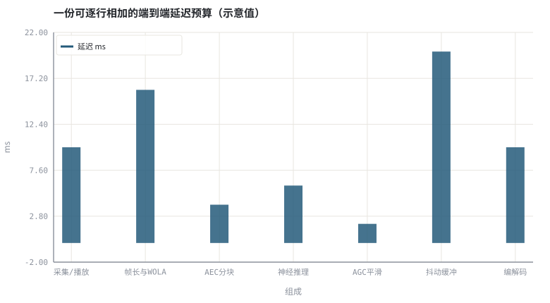
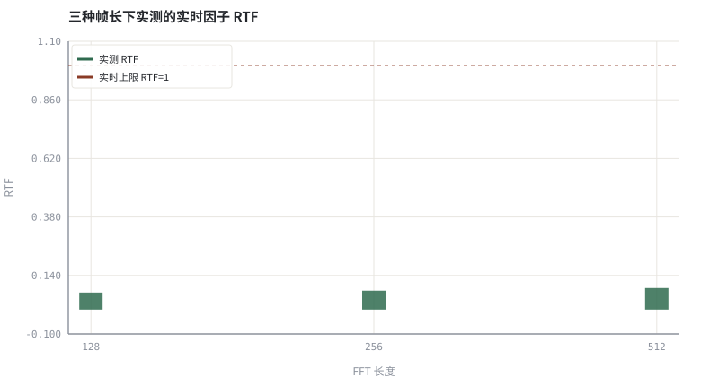

第 28 章延迟预算与 RTF：实时链路账本
把「能不能实时」写成一张可以逐行相加、可以实测核对的表。
本章位置：第 27 章 · 因果性与流式推理：状态缓存、感受野 给出流式的正确性，本章给出时间账本；第 29 章 · 量化、剪枝与端侧推理 处理算力与模型体积，第 31 章 · 结课项目：小型掩码估计器与全链路验证 把三本账一起纳入验收。
延迟预算是一张 BOM 表：每个模块报自己的毫秒数，总价超了就按「性价比」从大到小砍，而不是凭感觉调模型。
- 能列出端到端延迟的各个组成项并给出量级。
- 能计算实时因子 RTF 并说明它与吞吐的区别。
- 能用计时实测一段处理链路的 RTF 并与预算对照。
- 能说明延迟超标时该按什么顺序优化。
§知识点地图
每个知识点都配了 1～2 个扩展学习链接；本章完整资源清单见 扩展学习。
| # | 知识点 | 扩展学习 | 状态 |
|---|---|---|---|
| 1 | 端到端延迟 | RFC 3550 RTP ↗ · MDN Web Audio API ↗ | 正文已覆盖 |
| 2 | 算法延迟 | RFC 3550 RTP ↗ · MDN Web Audio API ↗ | 正文已覆盖 |
| 3 | 帧长与前瞻 | RFC 3550 RTP ↗ · MDN Web Audio API ↗ | 正文已覆盖 |
| 4 | 缓冲与抖动 | RFC 3550 RTP ↗ · MDN Web Audio API ↗ | 正文已覆盖 |
| 5 | 编解码延迟 | RFC 3550 RTP ↗ · MDN Web Audio API ↗ | 正文已覆盖 |
| 6 | 实时因子 RTF | RFC 3550 RTP ↗ · WebRTC 官网 ↗ | 正文已覆盖 |
| 7 | 最坏单帧耗时 | RFC 3550 RTP ↗ · MDN Web Audio API ↗ | 正文已覆盖 |
| 8 | 预算优化顺序 | RFC 3550 RTP ↗ · MDN Web Audio API ↗ | 正文已覆盖 |
§28.1延迟是一张账本，不是一个数字
T_total = T_capture + T_frame + T_algo + T_jitter + T_codec + T_network
| 组成 | 典型量级 | 由谁决定 | 能否压缩 |
|---|---|---|---|
| 采集 / 播放缓冲 | 5～20 ms | 驱动与 OS | 有限 |
| 帧长与 WOLA | 10～32 ms | STFT 参数 | 可，但影响频率分辨率 |
| 算法前瞻 | 0～32 ms | 是否因果 | 因果化可归零 |
| 神经推理 | 1～10 ms | 模型 MACs 与硬件 | 可，见 第 29 章 · 量化、剪枝与端侧推理 |
| 抖动缓冲 | 20～100 ms | 网络 RTT 抖动 | 由网络决定 |
| 编解码 | 5～30 ms | codec 帧长与前瞻 | 换低延迟 codec |
ITU-T G.114 常把单向 150 ms 作为通话可接受的粗略上界；3A 处理通常只被允许占用其中很小一块（十毫秒量级）。先定预算再选模型，而不是先训出一个大模型再想办法塞进去。
§28.2RTF 与最坏耗时
RTF = T_计算 / T_音频时长 ；实时条件: RTF < 1 且 P99 单帧耗时 < 帧长
- RTF < 1 只是必要条件：平均够快不代表每帧都够快，调度抖动、GC 与多路并发都会造成尾延迟。
- 实测口径：固定种子、跑足够多帧、报平均与 P99，并注明硬件与是否多线程。
- 优化顺序：先砍非因果前瞻，再降帧长与通道数，最后做量化与算子融合。
- 端到端：RTP 时间戳与抖动缓冲由 第 00 章 · 3A 是什么：一条实时语音链路上的三个约束 的实时链路决定，算法侧省下的毫秒可能被网络侧吃掉。
下面用纯标准库实测「STFT → 逐 bin 增益 → ISTFT」一段的 RTF，并给出一份可逐行相加的延迟预算表。数值随机器而变，重点是口径而非绝对毫秒数。
§Python 实验
实验 28-1 · 延迟组成账本与三种帧长的 RTF 实测
#!/usr/bin/env python3
# -*- coding: utf-8 -*-
"""列出链路延迟组成，并用计时实测三种 STFT 帧长下的实时因子。
全部语音 / 噪声 / 房间冲激响应均为代码合成信号，仅用于教学演示机制与量级。
"""
from __future__ import annotations
import math
import pathlib
import random
import statistics
import sys
import time
_here = pathlib.Path(__file__).resolve()
for _p in _here.parents:
if (_p / "tools" / "dsp.py").exists():
sys.path.insert(0, str(_p / "tools"))
break
from dsp import (SAMPLE_RATE, fft, hann, stft, istft, magnitude_db, spectrum,
white_noise, tone, chirp, synthetic_speech, rir, convolve,
fft_convolve, delay, clip, normalize_peak, rms, rolling_rms,
smooth, db, energy_db, snr_db, erle_db, seg_snr_db,
scale_align, si_sdr_db, lufs_approx,
write_wav, read_wav, wav_info)
from chart import Chart, heatmap, BLUE, RED, GREEN, AMBER
FIG = _here.parents[1] / "fig"
AUDIO = _here.parents[1] / "audio"
FIG.mkdir(exist_ok=True)
AUDIO.mkdir(exist_ok=True)
random.seed(7)
# ---- 参数区 ----
N = 4000
REPEAT = 6
FFTS = (128, 256, 512)
BUDGET = (("采集/播放", 10.0), ("帧长与WOLA", 16.0), ("AEC分块", 4.0),
("神经推理", 6.0), ("AGC平滑", 2.0), ("抖动缓冲", 20.0), ("编解码", 10.0))
# ---- 计算与作图 ----
rng = random.Random(7)
sp = synthetic_speech(rng, N)
nz = white_noise(rng, N, 0.02)
sig = [sp[i] + nz[i] for i in range(N)]
rtfs, frame_ms = [], []
for n_fft in FFTS:
hop = n_fft // 2
t0 = time.perf_counter()
for _ in range(REPEAT):
frames = stft(sig, n_fft, hop)
for re, im in frames:
for k in range(n_fft):
g = max(0.2, 1.0 - 0.3 / (math.hypot(re[k], im[k]) + 1e-9))
re[k] *= g
im[k] *= g
out = istft(frames, n_fft, hop, N)
elapsed = time.perf_counter() - t0
rtfs.append(elapsed / (REPEAT * N / SAMPLE_RATE))
frame_ms.append(1000.0 * hop / SAMPLE_RATE)
names = [b[0] for b in BUDGET]
values = [b[1] for b in BUDGET]
total = sum(values)
c = Chart(FIG / "28-budget.svg", "一份可逐行相加的端到端延迟预算（示意值）",
xlabel="组成", ylabel="ms", xticks=[(i, n) for i, n in enumerate(names)])
c.bars(range(len(names)), values, BLUE, label="延迟 ms")
print("预算图:", c.save())
r = Chart(FIG / "28-rtf.svg", "三种帧长下实测的实时因子 RTF", xlabel="FFT 长度", ylabel="RTF",
xticks=[(i, "%d" % v) for i, v in enumerate(FFTS)])
r.bars(range(len(FFTS)), rtfs, GREEN, label="实测 RTF")
r.hline(1.0, RED, label="实时上限 RTF=1")
print("RTF图:", r.save())
write_wav(AUDIO / "28-input.wav", normalize_peak(sig))
write_wav(AUDIO / "28-output.wav", normalize_peak(out))
print("延迟组成: " + " ".join("%s=%.0fms" % (n, v) for n, v in BUDGET))
print("单向合计=%.1f ms | 帧长(跳)=" % total + " ".join("%d=%.1fms" % (f, m) for f, m in zip(FFTS, frame_ms)))
print("实测 RTF: " + " ".join("%d=%.4f" % (f, v) for f, v in zip(FFTS, rtfs)))
print("SAMPLE_RATE=%d REPEAT=%d | 数值随机器而变，重点是口径" % (SAMPLE_RATE, REPEAT))操作：把预算表逐行相加；对照三种帧长的 RTF 与 1.0 的实时上限。 预期与判读：帧长增大带来更细的频率分辨率与更高的算法延迟；本实验的纯标准库实现 RTF 远小于 1，但真实神经模型的推理耗时要另算。RTF 达标不等于端到端延迟达标，抖动缓冲与编解码往往占大头。
改参数看趋势：把 REPEAT 增加到 30，观察计时噪声变小、RTF 估计更稳。 文件位置：part6/28-latency-budget/code/28-latency-budget.py


28-input.wav
输入信号（16 kHz / 16-bit 单声道，代码合成信号，不是真实录音）
28-output.wav
最小链路处理后的输出（16 kHz / 16-bit 单声道，代码合成信号，不是真实录音）
代码块右上角可一键复制；仓库里的 code/*.py 由 tools/extract_code.py 从这些代码块自动抽取。脚本只用标准库、固定 random.seed(7)，运行后写出 fig/*.svg 与 audio/*.wav；批量运行用 ./tools/run_python.sh。
§可选真机命令片段
以下命令不参与批量运行，需要本机自行安装对应工具。滤镜是否可用取决于本机 ffmpeg 版本与编译选项，请先用 ffmpeg -filters / ffmpeg -version 自查，并以 https://ffmpeg.org/ffmpeg-filters.html 与各自官方文档为准；本书不假定任何特定版本具备某项能力。
用 ffmpeg 检查一段音频的实际时长与时间戳
ffprobe -hide_banner -v error -show_entries format=duration -of default=nw=1 out.wav说明：ffprobe 给出文件时长，可用于核对 RTF 的分母；工具是否安装与参数以本机输出及 https://ffmpeg.org/ffmpeg.html 为准。
§本章参考资料
按本章知识点挑选的精读资料；更多检索入口见 扩展学习。
§相关开源工程
下列工程仅作技术参照，版权与许可证归各自维护者所有。本书实验不依赖它们，也与之无从属关系。
§常见误区
- 只报平均 RTF，忽略最坏单帧耗时。
- 把离线两遍处理的耗时当成实时耗时。
- 算法侧省下的毫秒被抖动缓冲与编解码吃掉却没算进总账。
- 忽略非因果前瞻对延迟的贡献。
§习题与思考
- 为一条 16 kHz / 10 ms 帧的链路写出完整延迟预算表。
- 解释为什么 RTF < 1 仍可能不满足实时要求。
- 给出延迟超标时的三级优化顺序与理由。
§扩展学习
继续检索
- Google Scholar：algorithmic latency budget real time factor jitter buffer ↗
- arXiv：algorithmic latency budget real time factor jitter buffer ↗
- GitHub：algorithmic latency budget real time factor jitter buffer ↗
全书链接总表见 FFmpeg Filters 文档 ↗ 与 附录 A.7；滤镜是否可用请以本机 ffmpeg -filters 为准。